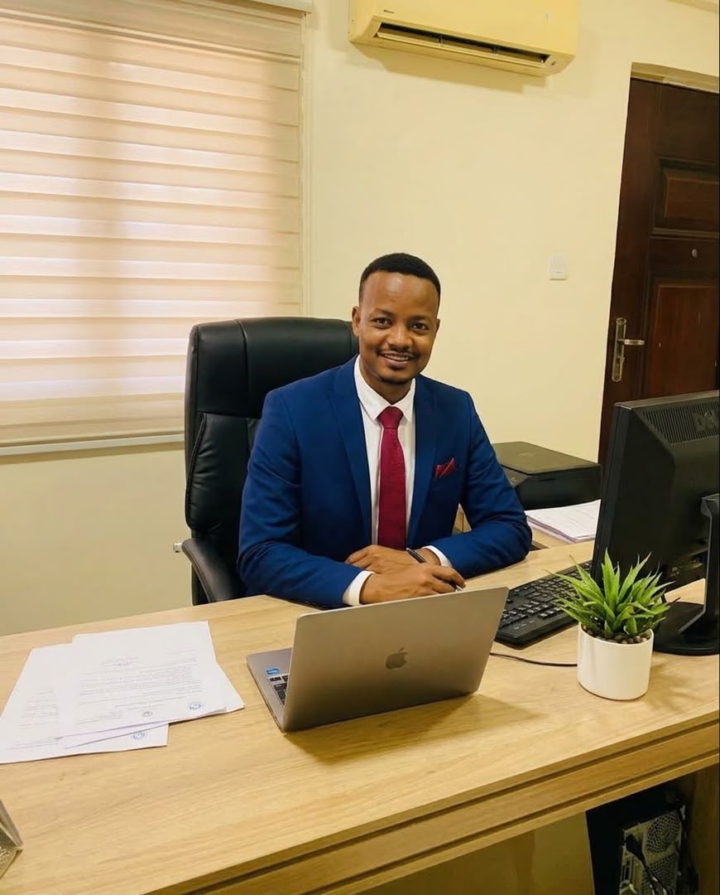

رسالتنا
تنفيذ مشاريع هندسية بعناية، مع التركيز على الجودة والتنسيق والمسؤولية في الموقع.
نبني علاقات عمل طويلة الأمد عبر التنفيذ المسؤول والمتابعة الدقيقة.
تقدم اكسس قروب خدمات البناء والهندسة المدنية والتشطيبات والصيانة وإدارة الأعمال الميدانية في السودان. ويعرض بروفايل الشركة أعمالًا فعلية في الحفر والخرسانة والمباني والصيانة.

تنفيذ مشاريع هندسية بعناية، مع التركيز على الجودة والتنسيق والمسؤولية في الموقع.
المساهمة في بناء مرافق ومساحات تدعم احتياجات الغد.
السلامة، النزاهة، جودة التنفيذ، والتعاون مع شركائنا.
الالتزام بالسلامة والعمل الجماعي يظهر في كل مرحلة من التنفيذ.


في الموقع، المتابعة ليست زيارة عابرة — بل وقوف مباشر على الأنشطة، مراجعة المخططات، والتأكد من أن التنفيذ يسير وفق الجودة والسلامة في كل مرحلة.


أرحب بكم في اكسس قروب للأنشطة المتعددة؛ المجموعة التي تأسست لتكون شريكًا استراتيجيًا ورائدًا في تنمية مختلف القطاعات الحيوية.
تتنوع مجالات عملنا لتلبية تطلعات السوق الحديث، حيث نبرز بتميّز من خلال «اكسس الهندسية» الذراع الرائد للمجموعة في تقديم الحلول الهندسية المتكاملة، والتصاميم المبتكرة، وإدارة المشاريع وفق أعلى معايير الجودة والاستدامة، إلى جانب استثماراتنا الممتدة في قطاعات تجارية وخدمية متعددة.
نلتزم في «اكسس قروب» بالابتكار المستمر، والتميّز التشغيلي، وبناء شراكات مستدامة تسهم في تحقيق القيمة المضافة لعملائنا ومجتمعنا.